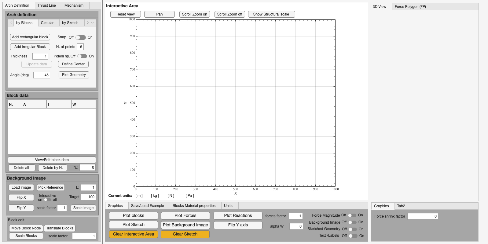
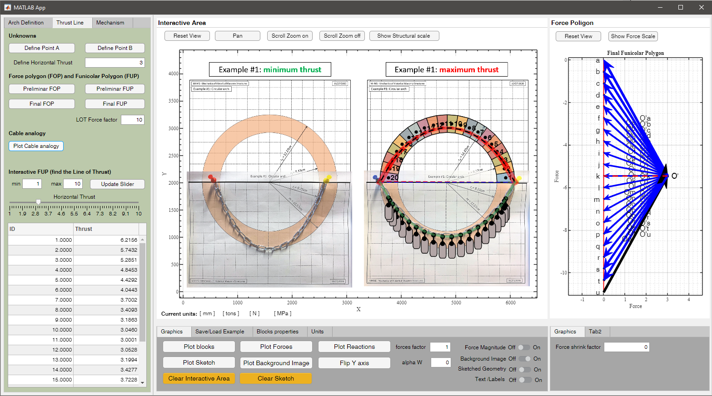
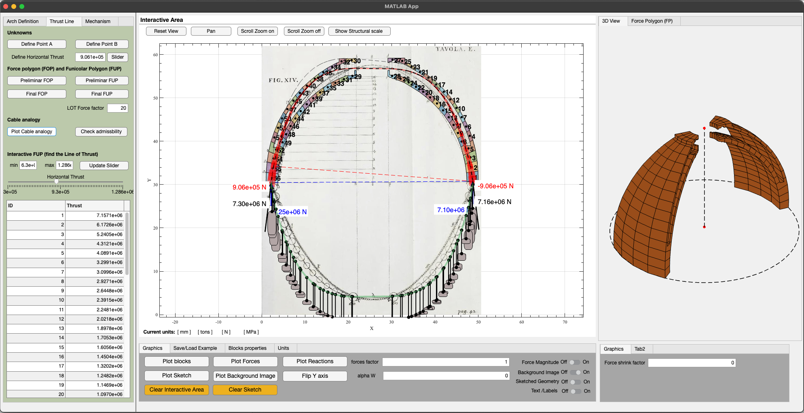
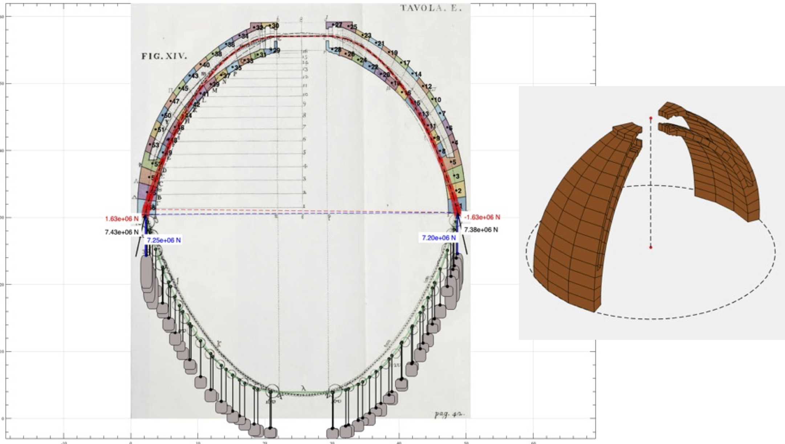

Requirements & launch
- Install MATLAB R2019a or later (App Designer app).
- Clone or download this repository.
- Add the repository folder to the MATLAB path, or open the project from that folder.
- Run the app:
- Double-click
aLOTofImaginArches.mlappin the MATLAB Current Folder browser, or - From the command window:
app = aLOTofImaginArches;
- Double-click
external_functions/ folder on the path
(same directory as the .mlapp file). The app uses helpers for intersections, arrows,
freehand selection, and the admissible domain.
Download & repository layout
The app is distributed as a MATLAB App Designer file plus helper functions and teaching examples. Keep the repository structure unchanged when moving the app to another machine.
| Path | Contents |
|---|---|
aLOTofImaginArches.mlapp |
Main MATLAB App Designer application. |
external_functions/ |
Helper routines for arrows, intersections, freehand drawing, point selection, and admissibility checks. |
Examples/ |
Ready-to-open .mat models for lectures and tutorials. |
docs/ |
This web guide, images, and PDF tutorials. |
- Download the repository from GitHub using Code → Download ZIP, or clone it with Git.
- Extract the ZIP if needed, then open the folder in MATLAB.
- Double-click
aLOTofImaginArches.mlapp, or runapp = aLOTofImaginArches;.
Main interface
The window is organized around three main tabs on the left, a central interactive plot, and auxiliary views on the right (3D view and force polygon).

| Area | Purpose |
|---|---|
| Left tabs | Arch Definition, Thrust Line, Mechanism — model setup and analysis. |
| Central plot | Geometry, blocks, forces, reactions, sketch, background image, line of thrust. |
| Bottom panel | Graphics, Save/Load Example, material properties, Units. |
| Right panel | 3D View and Force Polygon (FP) for visualizing resultants. |
| Block data table | Block number, area A, thickness t, weight W. |
Plot toolbar
- Reset View — restore default axis limits.
- Pan — move the view without changing data.
- Scroll Zoom on/off — enable or disable mouse-wheel zoom.
- Show Structural scale — display a reference length on the plot.
Recommended workflow
- Set Units (SI, N·mm, kg·cm, …) in the bottom panel.
- Define the arch geometry under Arch Definition (blocks, circular, or sketch).
- Assign block thickness and material properties; use Plot blocks to verify.
- Switch to Thrust Line: define springing points A and B, then build preliminary and final force polygons (FOP/FUP).
- Explore horizontal thrust with the slider and inspect the line of thrust.
- Save your session from Save/Load Example, or open a prepared
.matfile fromExamples/.

Arch Definition
Under Arch Definition, choose one of three sub-tabs: by Blocks, Circular, or by Sketch. You can also use Load Data to import existing block data.
by Blocks
- Add rectangular block / Add irregular Block — create voussoirs interactively on the plot.
- Update data — refresh block areas, centroids, and weights after edits.
- Plot Geometry — draw the current block outline.
- View/Edit block data — open the block table for manual edits.
- Move Block Node, Translate Blocks, Scale Blocks — geometric editing tools.
- Delete all / Delete by N. — remove blocks.
- Poleni hp. — toggle Poleni-style horizontal projection aids (useful for dome/arch teaching examples).
Circular arch
- Click Define Center and pick the arch centre on the plot.
- Set inner/outer radius, start/end angles, number of blocks, and thickness.
- Click Calculate Arch to generate voussoirs along the arc.
See the step-by-step PDF in PDF guides for a full circular-arch tutorial.
by Sketch
- Load image — import a reference photo or drawing (optional).
- Pick Reference — set scale by clicking two points and entering the real distance.
- Flip X / Flip Y / Scale Image — align the background.
- Sketch the arch — draw the intrados/extrados freehand.
- Define Center, then Define Left and Define Right springing regions as prompted.
- Set subdivision count and click Compute blocks.
Background image
When a background is loaded, use the Graphics tab switches to show/hide it and Plot Background Image to refresh. Flip Y axis inverts the plot if your image coordinate system differs from the structural axes.
Thrust Line
This tab connects geometry to statics: you define supports, build force polygons, and study how horizontal thrust changes the admissible line of thrust inside the masonry.
- Define Point A and Define Point B — springing locations (click on the plot).
- Preliminar FOP / Preliminar FUP — preliminary lower/upper funicular envelopes.
- Final FOP / Final FUP — refined polygons after block weights and geometry are set.
- Plot Reactions — show support resultants.
- Use the horizontal thrust slider (set limits with Update Slider) to sweep thrust and update the LOT.
- Inspect Line of thrust — detailed inspection of LOT segments.
- Check admissbility — verify whether the thrust line stays inside the block kernel.
- Plot Cable analogy — inverted funicular (hanging chain) visualization.
Force resultants appear in the Force Polygon (FP) panel on the right. Adjust Force shrink factor if arrows or polygon edges overlap.


Graphics, units & material properties
Graphics tab
- Plot blocks, Plot Forces, Plot Reactions, Plot Sketch
- Clear Interactive Area / Clear Sketch — reset overlays (not block data).
- forces factor and alpha W — scale force arrows and weight display.
- Switches: Force Magnitude, Background Image, Sketched Geometry, Text/Labels.
- Show Force Scale — reference for force arrow length.
Units tab
Presets include SI, Nmm, kg cm, and individual units for length, mass, force, and pressure.
The status line under the main plot shows the active unit system, e.g.
Current units: [ m ] [ kg ] [ N ] [ Pa ].
Blocks Material properties
Set specific weight and block thickness defaults. Use Define Thickness or edit the block table for per-block overrides. Weights update when you click Update data.
Mechanism tab
Tools for mechanism and limit analysis (development area). Use together with LOT inspection when teaching collapse mechanisms.
Examples & save/load
Prepared models live in the repository folder Examples/. From the app:
- Load Examples folder — point to the
Examplesdirectory. - Open Example — load a
.matfile (saved_variablesstructure). - Save to folder Examples — export your current session.
| Example file (selection) | Topic |
|---|---|
Example_1_Circular_arch_comparison.mat | Circular arch, comparison cases |
Example_3_Heyman_arch.mat | Heyman arch |
Example_4_Amiens.mat | Amiens cathedral arch |
Poleni_Example*.mat | Poleni dome / arch studies |
Utah_Arch.mat | Landscape / Utah arch sketch workflow |
Ctesifonte_01.mat, Ctesifonte_02.mat | Historical case studies |
Step-by-step PDF guides
These click-by-click PDFs complement this page (same content as linked from the repository README):
docs/ folder of the
GitHub repository.
Tips & troubleshooting
- Always Update data after moving blocks or changing thickness — weights and LOT depend on updated areas.
- If the plot looks empty, check Graphics switches (blocks, sketch, background) and click Plot blocks.
- If force arrows are too large or small, adjust forces factor or Force shrink factor.
- Use Clear All Variables for a full reset; use Clear Interactive Area only to remove overlays.
- For teaching demos, start from a prepared
.matexample, then change thrust with the slider live.
Python port
A cross-platform desktop port (pyLOT) is maintained separately and reads the same
Examples/*.mat files. See the
pyLOT repository.